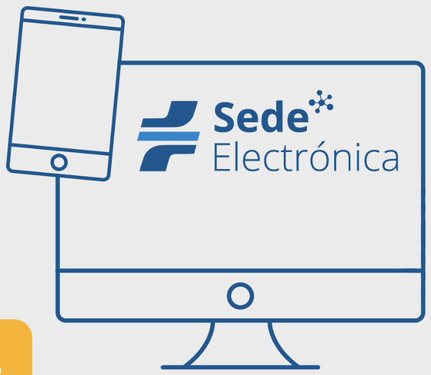

Clausurada la Conferencia Internacional de Seguridad Vial de la Moto
Zaragoza acoge la segunda edición del encuentro sobre movilidad segura en moto.
Leer másClausurada con éxito la segunda edición de la Conferencia Internacional de Seguridad Vial de la Moto

Realiza tus trámites con la DGT de forma rápida y segura.
AccederZaragoza acoge la segunda edición del encuentro sobre movilidad segura en moto.
Leer másDurante esta semana se intensificarán los controles en vías convencionales.
Leer másRecomendaciones para ciclistas y conductores al compartir la vía.
Leer más